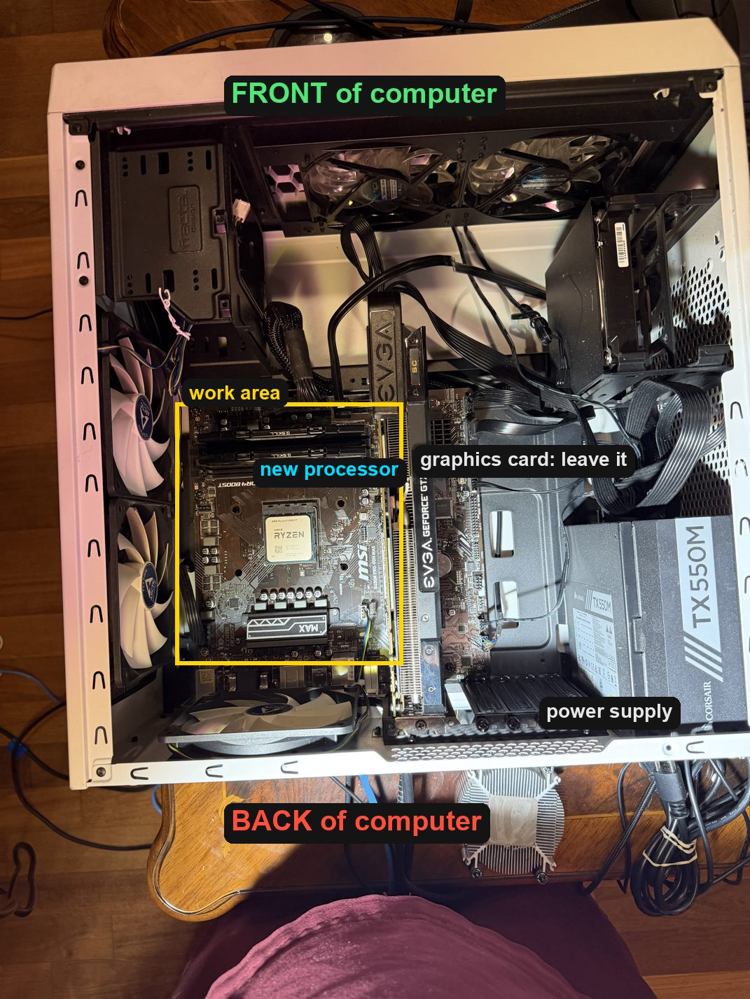
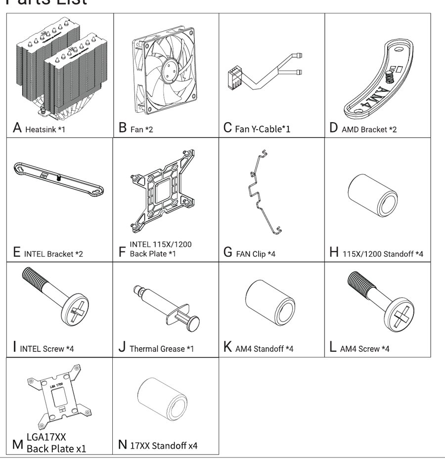
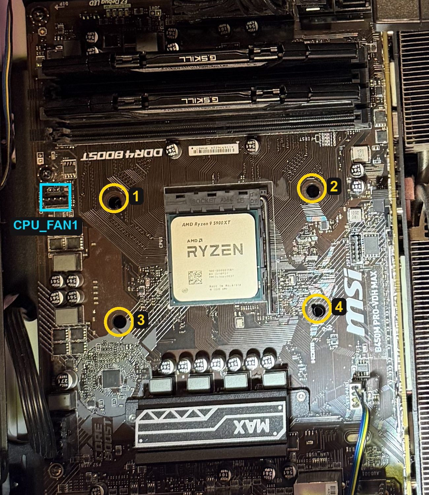
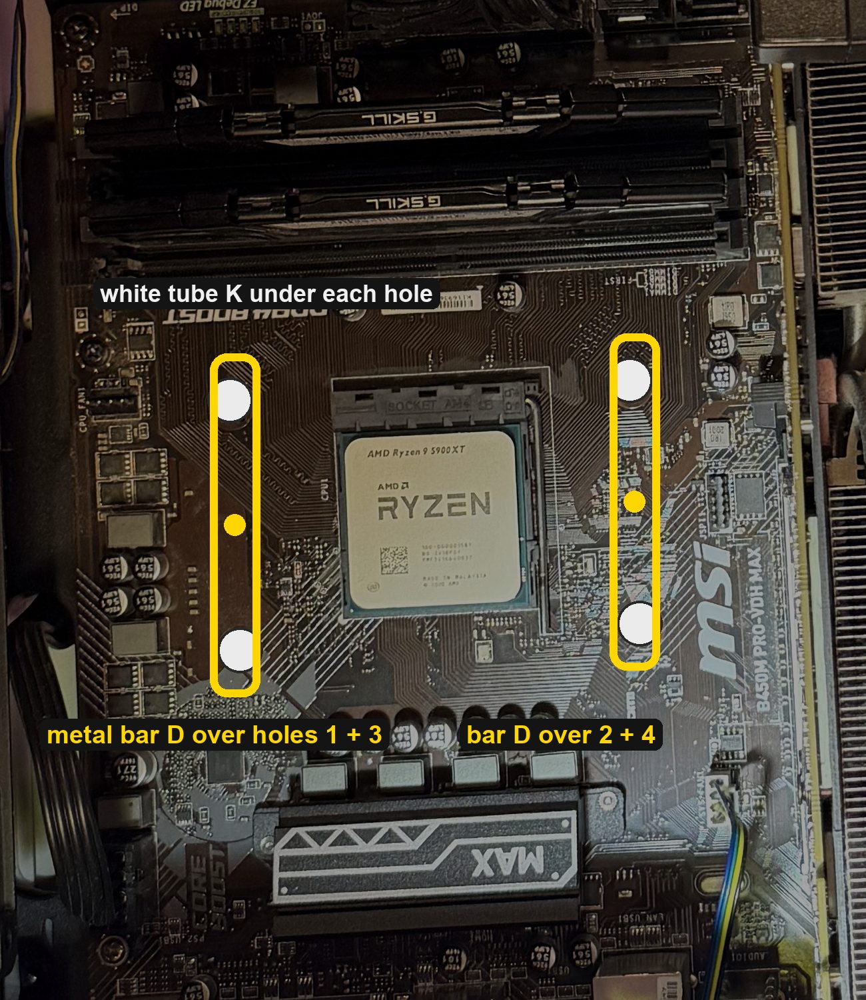
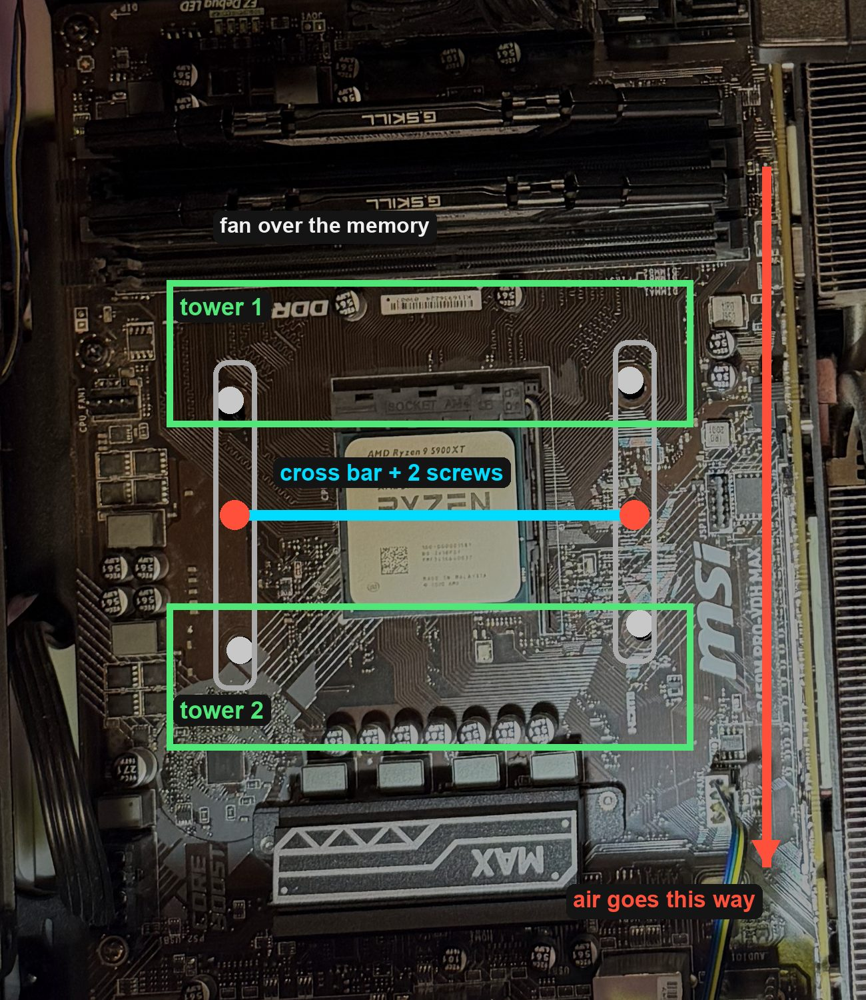
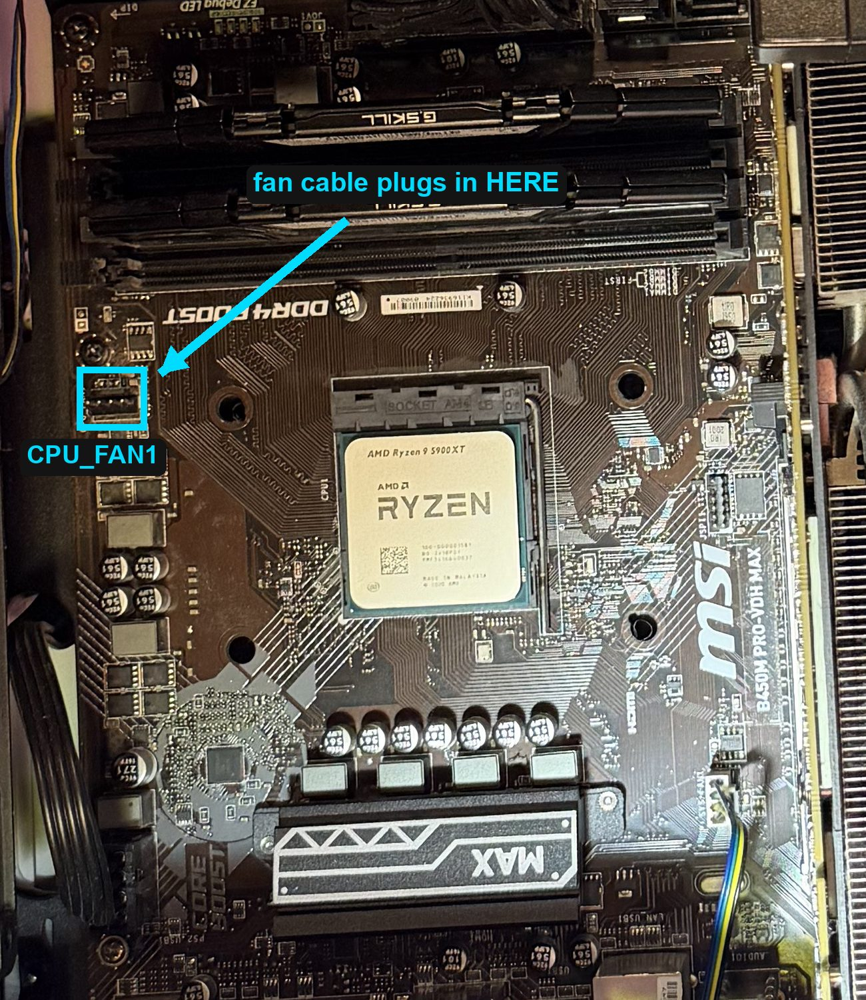
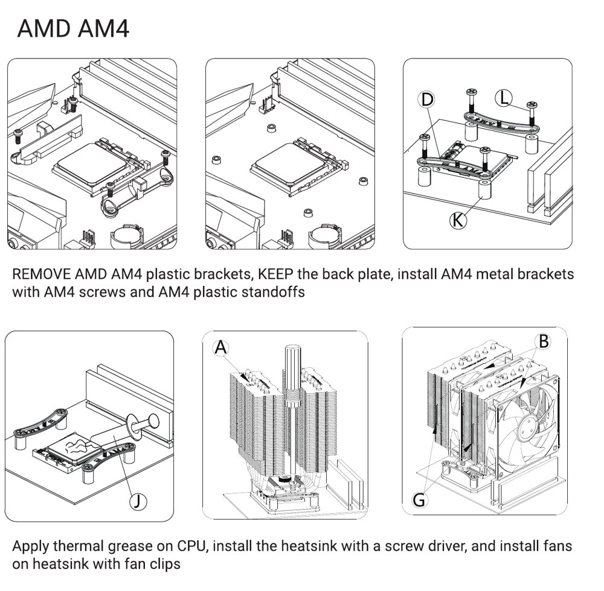

Putting the new fan on, step by step
These photos are of this exact computer. The new processor is already in. Go slowly. Nothing here needs force. If anything looks different from the pictures, stop and text Adam a photo.
0How to read the photos
The computer is lying on its side. In every photo, the top is the front of the computer and the bottom is the back (where the cables plug in).

Make sure it's still unplugged and the back switch is on O.
1Find these parts in the Thermalright box

You only need these:
- A the big metal tower (heatsink)
- B 2 fans
- C the Y-shaped fan cable
- D 2 curved metal bars stamped AM4
- K 4 short tubes marked AM4 Standoff
- L 4 screws marked AM4 Screw
- G 4 wire fan clips
- J the tube of grey paste
2Check the metal plate behind the board
The 4 holes around the processor go through the board into a metal plate behind it. The new fan screws into that plate.

- Shine your phone's flashlight straight into hole 1.
- You should see metal with a screw thread just under the hole.
- Check holes 2, 3 and 4 the same way.
3Tubes and metal bars

- Stand one K tube on top of each of the 4 holes.
- Lay one D metal bar across holes 1 and 3, and the other across holes 2 and 4, as in the photo. Both bars run the same way as the graphics card. The little screw post in the middle of each bar points up.
- Push one L screw down through each bar end and through its tube, into the hole.
- Turn each screw a few turns at a time, going 1, 4, 2, 3, until they all stop. Stop when it gets firm. Don't force it.
4Grey paste
Squeeze a dot of J paste the size of a pea onto the middle of the processor. Don't spread it.
5Peel the sticker
Don't touch the shiny bottom after that.
6Set the tower down and screw it in

- Take the fans off the tower if any are on.
- Turn the tower so its two fin blocks sit as in the photo: one toward the memory sticks (tower 1), one toward the MAX label (tower 2).
- Its metal cross bar then runs left to right, and its 2 screws sit right over the posts in the middle of the 2 metal bars.
- Lower it straight down onto the processor. Don't slide it around.
- Put the screwdriver down through the gap between the two fin blocks. Turn one screw 3 times, then the other 3 times, back and forth, until both stop.
7The 2 fans
- Look at the side of each fan B. There's a small arrow showing which way the air blows.
- Point that arrow toward the back of the computer, the bottom of the photo. That's the red arrow.
- Put one fan in the gap between the fin blocks and one on the front of tower 1, the side above the memory.
- Hook each fan on with 2 wire clips G: one hook into the fan's corner holes, the other into the notch on the tower's edge.
8Plug in the fan cable

- Plug both fan cables into the two ends of the Y-cable C.
- Plug the Y-cable's single end into CPU_FAN1. It only fits one way: the plastic ridge on the plug slides along the guide.
- Tuck the cables so nothing touches the fan blades.
9Turn it on
- Leave the side panel off.
- Plug the cord in, flip the back switch to I, press the power button.
- Both new fans should spin.
Text Adam: Processor is in.
★Thermalright's own pictures and video
The same steps, from the paper instructions in the box (AMD AM4 section):

In the video, skip the part where they take off black plastic brackets. Yours are already gone.